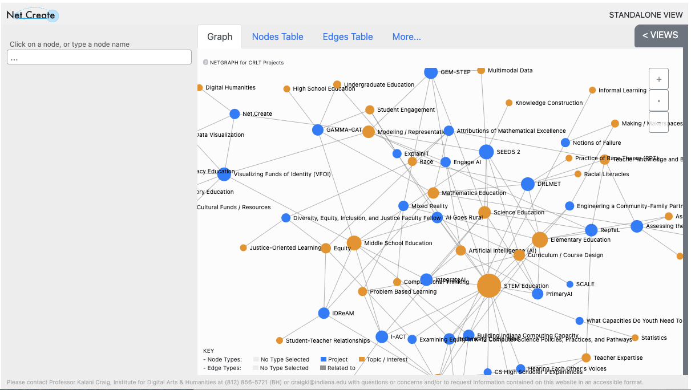

Humanities Without Walls ProjectsInsert overview of Grand Research Challenges, postdocs, other HWW-funded work/projects, and description of Network here. 
The Grand Research Challenge awarded funding to # of collaborative research teams over the course of # years. The first iteration of the Grand Research Challenge (GRC) awarded grants to projects related the theme of The Global Midwest. The second round of awards were made to projects centered around the theme of The Humanities in a Changing Climate. The third and final GRC focused on methods of Reciprocity and Redistribution applied to co-designed, community-engaged humanities research.
This theme linked the consortial partners in a common commitment to research and dialogue around a set of important, mutually articulated problems of broad public interest. Its principle long-term objectives are to reveal and rethink the Midwest as a major force in this century's global economy and culture and to demonstrate how the "applied humanities" can contribute to the work on grand intellectual challenges.
This research initiative linked the contsortium partners in a common commitment to intellectual exchange and dialogue around a broad question that resonates with many contemporary humanist scholars—namely, what is the work of the humanities in a changing climate? As a metaphor, climate change is pluripotent: it offers humanists the opportunity to think expansively about the meanings of "climate" and "change" as they manifest in their own research, and to bring their contributions to bear on cognate questions in the present.
HWW's third Grand Research Challenge focused on building commitment to methodologies of reciprocity and redistribution into the project design. Through modes of research partnership that are reciprocal and redistributive, collaborators demonstrated that "humanities without walls" is not only a metaphor but also a strategic commitment to imagining and doing academic work more inclusively—with universal access, social equity, and racial diversity always front of mind.